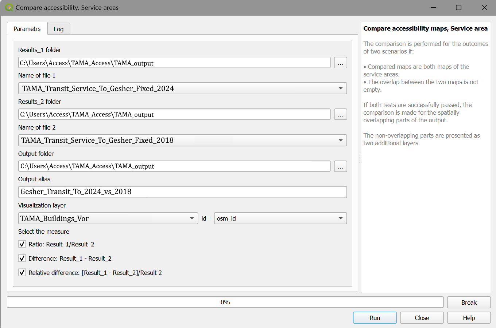

8. Compare accessibility maps
Accessibility can be fully understood in comparative study, when the results of accessibility computations for two or more scenarios that consider different travel modes or different sets of parameters. The Compare accessibility maps part of the Accessibility Calculator menu (Figure 1) is developed for this purpose.
Figure 1. Compare accessibility maps menu
Formally, comparison is performed for the outcomes of two scenarios, and to start, Accessibility Calculator verifies that the comparison can be performed. The verification is based on the Log files of these scenarios that must be in the folder of each scenario’s output, otherwise the comparison will be quit. The compatibility tests verify that:
The compared maps are both maps of the service areas, or region accessibility.
The overlap between two maps is not empty.
In the REGION regime, the time bins of both outputs are the same.
Note that the comparison of the from- and to-accessibility maps is allowed. If all tests are successfully passed, the comparison is made for the spatially overlapping parts of the output. The non-overlapping parts are presented as additional layers, together with the results of the comparison. The dialog and parameters of the Compare accessibility maps → Service areas and Compare accessibility maps → Regions are the same. We illustrate them with the Compare accessibility maps → Service areas comparison. Enter the parameters:

Result1 folder — the folder that contains the outputs of the first scenario.
Name of file1— the CSV file of the Scenario_1 results in the
Result1 folder, found automatically.
Result2 folder — the folder that contains the results of the second scenario.
Name of file2 — the CSV file of the Scenario_2 results in the Result2 folder, found automatically.
Output folder — the folder to store the results of the comparison.
Output alias — the alias for the files of results and layers of visualization.
Basic visualization layer — the name of the layer that will be used for visualization of accessibility maps, must be a part of the current QGIS project.
id- the name of the unique identifier field of the visualization layer unit. The values of the identifier must be the subset of the set of buildings’ identifiers. More information here.
The measures of comparison:
Ratio: Result_1/Result_2 — the ratio of the result of the first scenario to the results of the second scenario, for the overlapping part of the outputs.
Difference: Result_1 - Result_2 — the difference between the result of the first scenario and the results of the second scenario, for the overlapping part of the outputs.
Relative difference: [Result_1 - Result_2]/Result 2 — the difference between the result of the first scenario and the results of the second scenario divided by the result of the second scenario, for the overlapping part of the outputs. The result is presented in percents.
For each of the three cases, in addition to the map of the selected measure of difference, two more maps are presented. The first one presents the buildings that were accessible in Scenario 1 (Result_1 is not NULL) but are not accessible in Scenario 2 (Result_2 is NULL). The second map presents the buildings that were accessible in Scenario 2 (Result_2 is not NULL) but are not accessible in Scenario 1 (Result_1 is NULL).
Click Run to start. The Progress bar shows the progress of the computations. You can break the process of the computations by pressing Break.
The Log tab repeats the Log information of each of the compared scenarios and contains the metadata about the chosen measures and the overlapping parts of the outputs. If the comparison has failed the Log file contains the reason for the failure (Figure 2).
Figure 2. The log file of the Compare accessibility maps output
The example of the Compare accessibility map → Service areas, see here.
The example of the Compare accessibility map → Regions, see here.